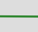
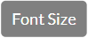
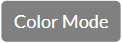
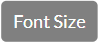
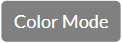
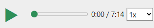
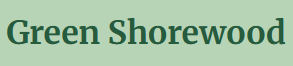
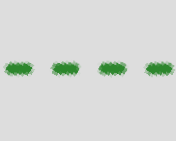

Welcome to our walking tour!
Hit the Play ▶ button to start audio


Hello, and welcome to our Green Stormwater Infrastructure Walking Tour in the Village of Shorewood in Milwaukee County. You should be standing in the Shorewood Public Library atrium. Refer to Image #1, #2 and #3 of the Starting Point image carousel to confirm you are in the correct location. You can swipe through the images on your screen to view them.
The Village of Shorewood is located between the Milwaukee River on the west and Lake Michigan on the east, with the Library sitting at the midpoint between these watery boundaries. Thus, the Shorewood Public Library serves as a vibrant community hub, offering resources for learning, connection, and exploration, and therefore is a perfect place to start our tour.
Now, let’s dive into the purpose of our tour today. Shorewood’s unique location offers many commercial, recreational, and aesthetic advantages, but also presents a risk: flooding from increasingly frequent and severe storms due to changing climates. To manage stormwater, many cities have built large underground sewers and utility systems, known as Gray Stormwater Infrastructure, which rely on concrete and other unnatural materials to move water away quickly.
In contrast, the stops on this tour highlight the innovative “green”, or environmentally-friendly, practices that Shorewood has implemented. This collection of practices, known as Green Stormwater Infrastructure, utilizes natural solutions to capture and regulate stormwater right where it falls, alleviating reliance on Gray Stormwater Infrastructure. By doing so, Green Stormwater Infrastructure plays a crucial role in contributing to a more resilient and sustainable Shorewood community.
Navigating the app
Today, you will be using an interactive map to follow a green route that will navigate you to 10 stops along the tour. Before starting the tour, make sure that
- • Your GPS is enabled on both your phone and browser
- • Your browser screen MUST be open throughout the tour to enable automatic audio playback – do not lock your screen or switch apps
- • Your phone is fully charged or you have an external battery pack
- • You are dressed for the season and wearing appropriate footwear!
- • And for the best experience, use headphones!
Now, let’s walk through how the interactive map works. Image #4 shows a static image of the map. You can also find the map and app instructions under the “Menu” tab throughout the tour. If you already feel confident to navigate on your own, you can skip the following explanation and press “Start Tour”, but please make sure you understand how the map and audio features work before heading out.
Once you click the button, the interactive map will appear on your screen. If GPS is enabled on both your device and browser, you’ll see a blue circle on the map . That’s you! You can refer to your current location on the map to follow the green route . Pinch to zoom out if you'd like an overview of the entire route. The center button re-centers the map to your current location and the button below it turns on dark mode.
Follow the numbered green circles  on the route to move in the suggested tour direction. These circles represent the 10 main stops, each featuring a different
Green Stormwater Infrastructure practice. At each stop, you'll find an audio narration and an image carousel with photos, diagrams, or maps to help you identify and
understand the practice. You can also read the text version of the narration on your screen. Use the buttons below the image carousel to adjust  and
switch  for better readability.
on the route to move in the suggested tour direction. These circles represent the 10 main stops, each featuring a different
Green Stormwater Infrastructure practice. At each stop, you'll find an audio narration and an image carousel with photos, diagrams, or maps to help you identify and
understand the practice. You can also read the text version of the narration on your screen. Use the buttons below the image carousel to adjust  and
switch  for better readability.
For each green circle, please stop walking and listen to the full audio before continuing to the next stop. And always stop walking when viewing text or images for your safety!
The white circles  provide additional context as you walk between green stops and thus you can continue to walk while listening to the white circle audio
or even skip them if you prefer.
provide additional context as you walk between green stops and thus you can continue to walk while listening to the white circle audio
or even skip them if you prefer.
When you enter any circle on the map, green or white, the audio will play automatically, and the images and text will open up on your screen. It may take a few seconds to load depending on GPS accuracy and internet speed. To avoid delays, we recommend downloading the audio in advance. You can also use the audio controls  at the top of your screen to pause, rewind, or change playback speed. You can always use the button to return to the map view for navigation. You can tap any green or white circle on the map to manually open that stop’s information and replay its audio anytime.
If you want to return to this screen, tap  at the top or select the first white circle on the map.
The tour should take approximately 2 hours to complete. The route mostly follows paved sidewalks but includes a stairwell and a dirt path along the Milwaukee River. For those who wish to avoid stairs, an alternate accessible route is available near the Oakleaf Trail Bridge on Capitol Drive. This accessible path is mostly paved but includes a 100-foot section of unpaved, slightly sloped trail made of dirt and wood chips. The accessible route is marked with a dashed green line  on the map, and I will alert you when you reach the fork so that you can follow your preferred pathway.
Now, click the button and walk towards the first green circle on the map. If you are facing the library entrance from the atrium, use the door on your left to exit the building. Begin the tour by exploring our first Green Stormwater Infrastructure feature at the northeast corner of the library.